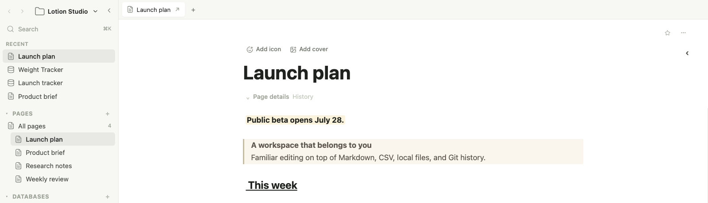
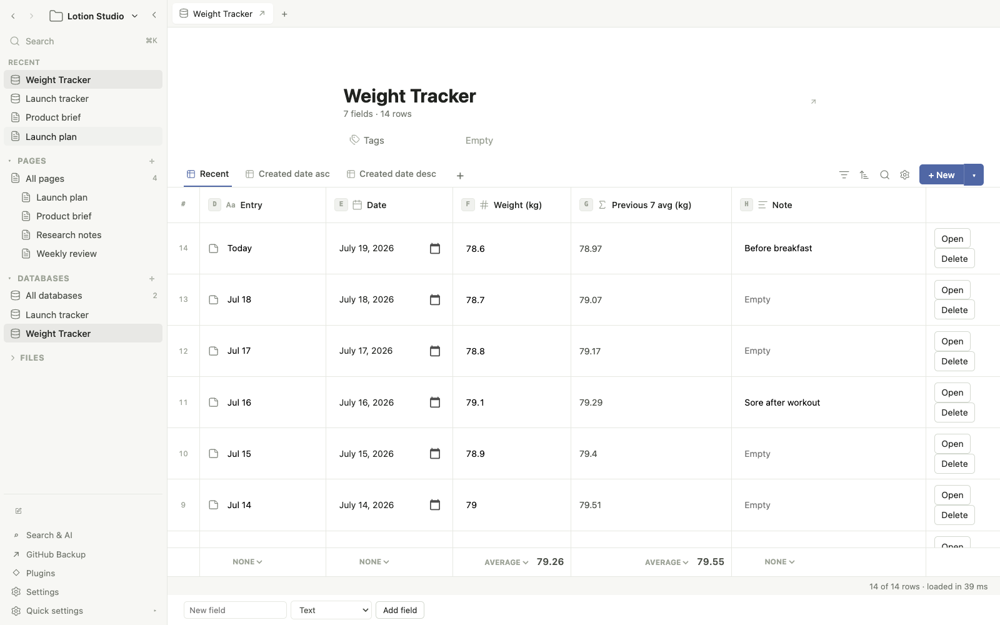
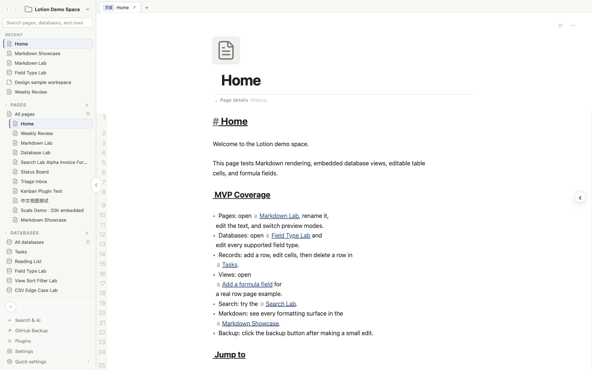

Write
Slash commands, inline formatting, toggles, callouts, code, equations, tables, images, embeds, and source access.
Open source · Local first
A workspace that belongs to you.
The calm editing experience of a modern workspace, with spreadsheet formulas over Markdown, CSV, regular files, and Git.

Markdown pages · CSV databases · Local attachments
The storage model
Lotion adds a polished interface without turning your knowledge into an opaque application database. Open the folder and the data is still understandable.
Rolling calculations across rows
Record one weight each day. Lotion calculates the average of the previous seven calendar days directly from the CSV, without a helper database, relation, or rollup.
=IFERROR(ROUND(AVERAGEIFS([weight_kg], [recorded_date], ">="&[@recorded_date]-7, [recorded_date], "<"&[@recorded_date]), 2), "")
The product
Write, organize, search, and connect information without thinking about the file format during ordinary work.

Connected workflows
Slash commands, inline formatting, toggles, callouts, code, equations, tables, images, embeds, and source access.
Editable fields, spreadsheet formulas, relations, rollups, filters, sorts, templates, summaries, and multiple database views.
Workspace search, backlinks, page history, nested pages, tabs, favorites, plugins, typed APIs, and Git backup.
Bring the work with you
Lotion converts Notion HTML and CSV exports into nested pages, databases, row pages, attachments, links, and an audit report for anything ambiguous.
Compatibility guideOpen source · Early development
The repository includes a synthetic demo workspace, regression fixtures, import coverage, and performance gates. Node.js 20 or newer is recommended.
git clone https://github.com/hu-xianglong/lotion.git
cd lotion
npm install
npm run demo:reset
npm run dev